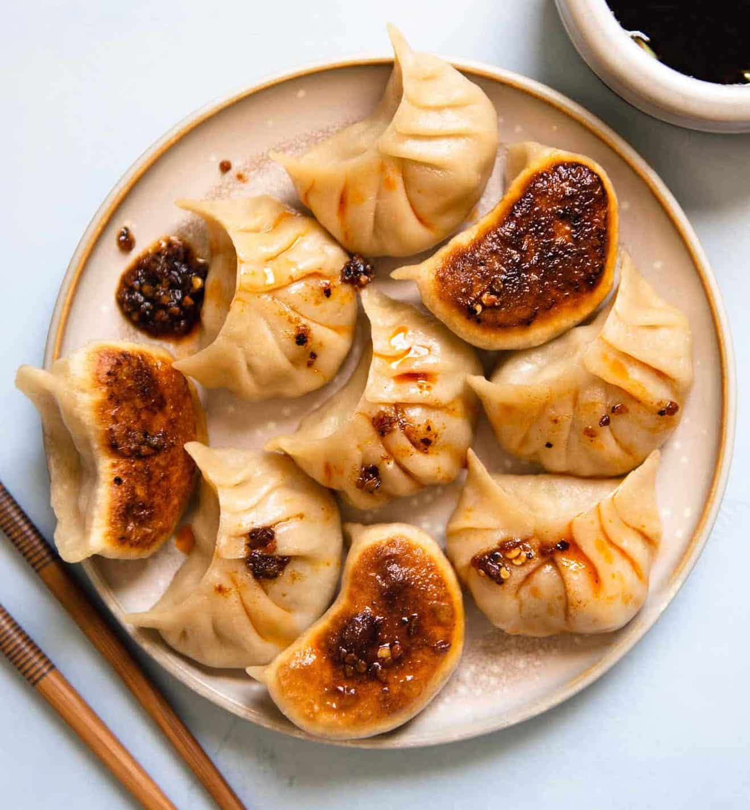

Pork and Cabbage Potstickers

Original recipe created by Lisa Lin of Healthy Nibbles
Better than takeout and great for meal prep. These potstickers will fulfill your dumpling cravings with their succulent pork and cabbage filling along with their satisfyingly crisp bottoms.
Servings: 35 potstickers
Ingredients
For dumplings:
- 1 tablespoon peanut or canola oil
- 1 1/2 cups finely chopped green cabbage
- 2 tablespoons minced ginger
- 2 tablespoons minced garlic
- 1/4 cup chopped scallions
- 1 teaspoon kosher salt, divided
- 1 pound 80% lean ground pork
- 2 teaspoons tabioca starch
- 3 tablespoons water
- 2 tablespoons soy sauce
- 1 1/2 teaspoons sesame oil
- 1 teaspoon sugar
- 35 to 40 round dumpling wrappers
For cooking dumplings (1 Batch of 15 to 17 dumplings)
- 2 tablespoons peanut, canola, or vegetable oil, any neutral oil works
- 1/4 cup water
Instructions
Prepare the Fillings:
- Heat the peanut or canola oil in a large sauté pan over medium heat. Once the pan is hot, add the cabbage, ginger, garlic, and scallions. Cook everything for about 2 minutes, stirring frequently. Add 1/4 teaspoon of kosher salt and stir. Turn off the heat and transfer the vegetables to a plate to cool for 10 minutes.
- Place the ground pork in a large bowl. Add the tapioca starch and water. Using chopsticks or a wooden spoon, stir the ingredients together for several minutes. After about a minute, you should hear squishing sounds and the meat should become more paste-like.
- Add the soy sauce, sesame oil, 3/4 teaspoon kosher salt, and sugar to the bowl. Stir for a about a minut to incorporate all the ingredients. Pour the vegetables into the bowl with the meat and stir together.
Prepare the Dumpling-Making Station:
- If you are using store-bought wrappers, fill a small bowl with water for wrapping and sealing the dumplings. If you are using fresh dumpling wrappers, cover the wrappers with a dry cloth or a layer of plastic wrap to keep them from drying out.
- Grab a baking sheet for the finished dumplings and a towl to cover the sealed dumplings to keep them from drying. Get a spoon for scooping the dumpling filling.
Making the Dumplings:
- If you are using store-bought wrappers: Dip the dumpling wrapper into the bowl of water. Rotate the wrapper so that 3/4 of the wrapper is wet, creating a wet border about 1/4 to 1/2-inch wide. Lay the wrapper on your left hand, the wet side facing you. Place about 1 to 1 1/2 tablespoons of filling into the center of the wrapper (you may use more or less depending on the size of your dumpling wrapper).
- If you are using fresh wrappers: Add the filling to the center of the wrapper. You do not need to moisten the edges.
- For the "v" shape pleating method: Start folding up the dumpling like a taco, and pinch together the wrapper in the center (the left and right sides of the dumpling are not sealed). You will be creating pleats on the side of the wrapper that is facing you.
- Start creating pleats to the left of this center pinch. Use your index finger and thumb to gather a pleat and seal it to the right. Continue gathering dough and sealing pleats to the right until you reach the end.
- After the left side is finished, continue with the right side. Gather up dough to the right of the center pinch and seal the pleat towards the left. I like overlapping this pleat with the first pleat you made on the other side to create a “v” shape in the center of the dumpling. Continue creating and sealing the pleats to the left until you reach the end.
- Place the finished dumpling on the sheet pan and cover it with a towel. Continue wrapping and pleating the remaining dumplings until there is no filling left.
Cook the Dumplings:
- Heat a well-seasoned large cast iron skillet or large nonstick pan with 1 1/2 tablespoons of oil over medium-high heat. Arrange the dumplings over the pan. I usually cook about 15 to 17 dumplings at a time. Pan fry the dumplings for 2 to 3 minutes, until the bottoms are golden brown.
- Next, hold the pan lid with one hand and pour about 1/4 cup of water into the pan with your other hand. You want just enough to cover the bottom of the pan. When the water comes in contact with the hot oil, there will be a lot of splattering, so use the lid of the pan as a shield. Cover the pan, reduce the heat to medium, and cook for 5 to 6 minutes.
- Uncover the pan and let the dumplings cook for another minute, until the water is evaporated.
- Transfer the cooked dumplings to a plate.
- Repeat this entire cooking process if you want to cook the remaining dumplings. If you want to cook the dumplings later, freeze them
- Serve!